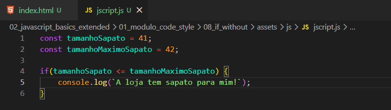

If without {}
Intro
Aqui iremos simular uma loja de sapatos onde iremos onde estamos comprando um sapato, com isso iremos criar um codigo para definir o tamanho do sapato e tamanho maximo do sapato. Ficando da seguinte forma:

Podemos observar que nesse caso, enquanto a verificacao for true, teremos um resultado porem se a validacao for false nao obtemos nem um resultado. Feito isso podemos observar tambem que com o uso correto de chaver ({}) podemos visualizar melhor a informacao passada dentro da condicional e sem ter problemas com o codigo.